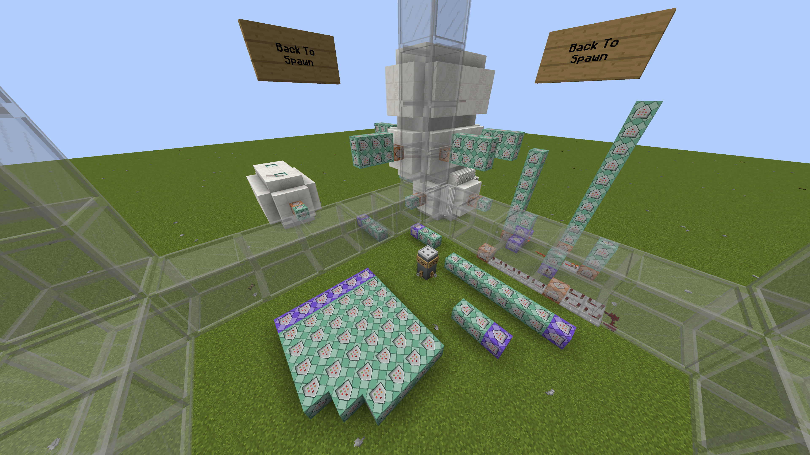
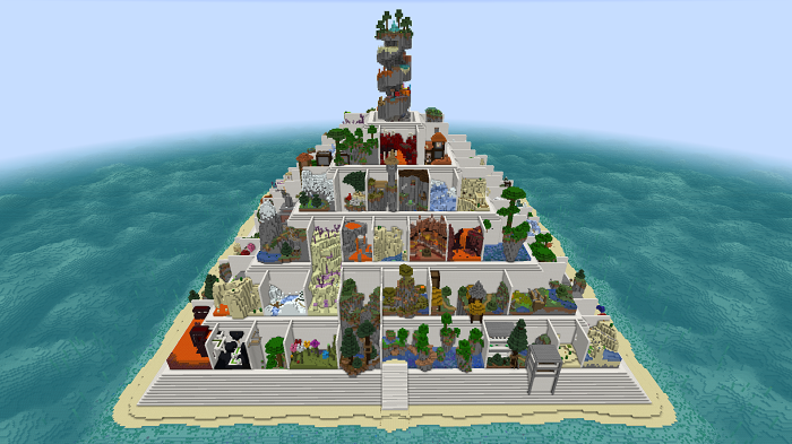
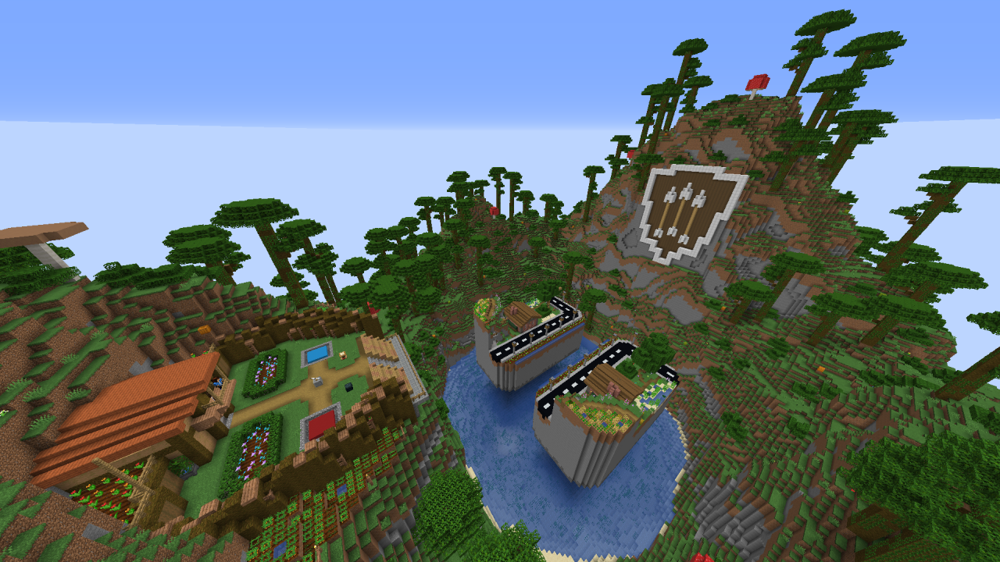

<div class="container">
  <div class="row">
    <div class="col-lg-8 col-md-10 mx-auto">

      <span>Hey there, I'm a Minecraft content creator.<br>Here's all for you to know about me!<br><br>
        <h5>The Early Days</h5>
        I started making maps in Minecraft in 2012 on my Xbox 360. Eventually, I got a computer and the first map I published online was a simple PvP minigame giving players a small selection of potion effect perks and knockback sticks in an arena where the walls were made of cacti. This turned out to be
        "<a href="https://www.minecraftmaps.com/pvp-maps/death-by-cactus" target="_blank"style="text-decoration: underline;">Death By Cactus</a>".
        To my surprise, it now has over a thousand downloads on the
        <a href="https://www.minecraftmaps.com" target="_blank"style="text-decoration: underline;">Minecraft Maps</a>
        website.<br>
        I continued to make a few more maps for fun, practice, and to gain experience, even though most of them were never finished.
      </span>
      <figure class="figure">
        
        <figcaption class="figure-caption">A screenshot of the Death By Cactus map</figcaption>
      <p>
        <a href="https://HielkeMaps.com" target="_blank"style="text-decoration: underline;">Hielke</a>
        has become a very good friend of mine. Back in the day, I was a fan of his famous parkour maps that I watched
        <a href="https://www.youtube.com/watch?v=EhTrNSgTyKA" target="_blank"style="text-decoration: underline;">PrestonPlayz</a>
        play on YouTube.<br>
        Long story short, one afternoon in late 2017, I met Hielke on a server, and he brought me in to help him with a new map he was making called
        "<a href="https://HielkeMaps.com/maps/parkour-pyramid" target="_blank"style="text-decoration: underline;">Parkour Pyramid<a>".
        It's currently on Minecraft Realms, the Bedrock Marketplace, and has over a quarter-million downloads on the
        <a href="https://www.minecraftmaps.com/parkour-maps/parkour-pyramid" target="_blank"style="text-decoration: underline;">Minecraft Maps</a>
        website.
        <figure class="figure">
          
          <figcaption class="figure-caption">A screenshot of the Parkour Pyramid map</figcaption>
      <p>
        <h5>Leveling Up</h5>
        Around halfway through Parkour Pyramid's creation, Hielke suggested I join him on
        <a href="http://youtube.com/PrestonPlayz" target="_blank"style="text-decoration: underline;">PrestonPlayz</a>'s
        private map making team. This was because he knew I enjoyed creating maps, that I was good at it, and it was a job for me to earn money from. My previous work was examined, and I was accepted onto the team. That's when I got professional with map making.<br><br>
        I spent the following two years or so creating maps that Preston requested I make, and got paid some in return. For a couple years after that, I worked more closely with Preston's buddy,
        <a href="http://youtube.com/BahriGaming" target="_blank"style="text-decoration: underline;">Bahri</a>.
        We focused more on making datapacks and resource packs that add new things to the game, or changing how some of the game works, for endless videos.
      <p>
        <h5>Realms</h5>
        A little later, Hielke and I decided to create a map together, which ended up becoming
        "<a href="/maps/arrow-fight" target="_blank"style="text-decoration: underline;">Arrow Fight<a>".<br>
        <figure class="figure">
          
          <figcaption class="figure-caption">A screenshot of the Arrow Fight map</figcaption>
        </figure>
        After finishing Arrow Fight, I got it ready for a submission to Minecraft Realms, and it was accepted.
      </p>
        I had been wanting to be a mapmaker for Realms for years, and when Arrow Fight was accepted, that dream came true.<br>
        Since that day, I've contributed to a number of other maps for Realms, and published another 3 myself, all of which you can download
        <a href="/maps" style="color: #dc3545;text-decoration: underline;">here<a>, with more to come!
      <p>
        <h5>Now</h5>
        I unfortunately can't justify spending time on maintaining or making new maps or datapacks. Instead, I'm working on a slightly different, much larger project that'll accumulate my craft over a longer period of time.
        <h5>Stay tuned.</h5>
        <br>
        <figure class="figure">
          
        </figure>
      </p>
    </div>
  </div>
</div>
